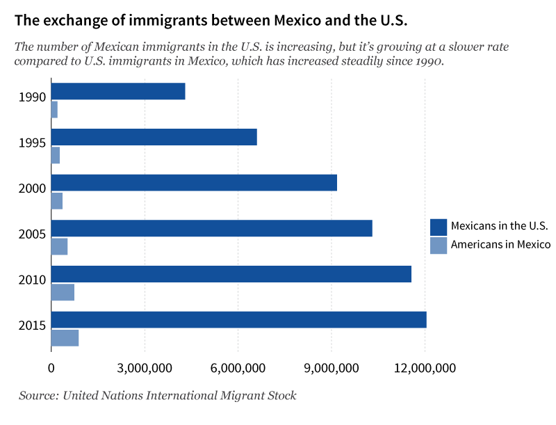
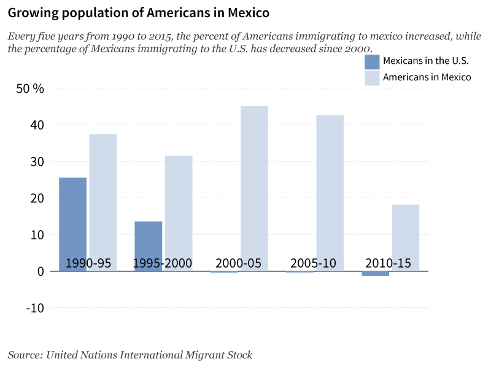

Americans are immigrating to Mexico faster than Mexicans are entering the US
Presidential candidate Donald Trump has not shied away from making controversial claims against Mexican immigrants throughout his candidacy, claiming they are rapists and drug addicts and are stealing jobs from American Citizens.
During a visit to Arizona last week, Trump clarified his stance on immigration reform, should he become president: send the undocumented immigrants back to their home countries, make them wait ten years and then apply for reentry, separating them from their families in the United States.
Despite Trump’s immigration policy and his claims against Mexicans, data from the United Nations shows the rate of Mexicans entering the U.S. decreasing steadily since 2000. Meanwhile, the number of U.S. citizens immigrating to Mexico has skyrocketed since 1990, with Americans being the largest immigrant population in Mexico.
Additionally, the percent change in populations of Americans immigrating to Mexico increased with each five year period, while the percentage change of the population of Mexicans immigrating to the U.S. decreased after 2000. These numbers are a stark contrast to what politicians like Donald Trump are telling voters, the Mexican immigrant population is actually going down, relative to the previous time period.
